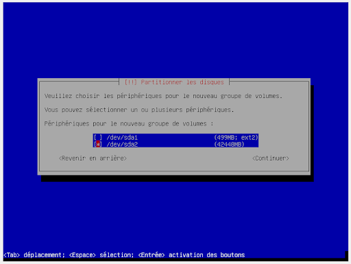
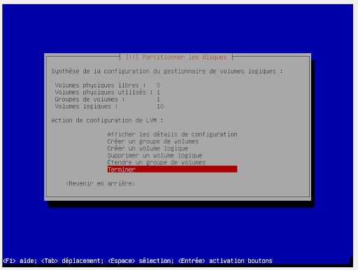
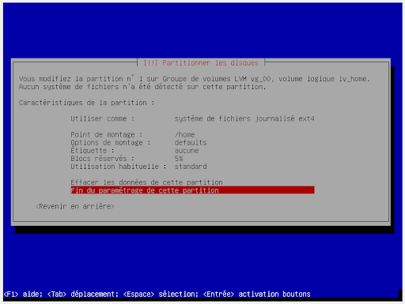
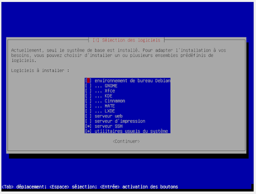

sélectionner "install" pour faire une installation classique.

Donner un nom à votre machine.

Pour créer la machine virtuelle sur le cloud de l'école, il faut récupérer ces informations sur le commun.
| Catégorie | Adress |
|---|---|
| Plage ip | 172.16.0.82 à 94 |
| Masque | 255.255.255.240 (/28) |
| Gateway | 172.16.0.81 |
| DNS1 | 192.168.90.55 |
| DNS2 | 192.168.90.68 |
Il faut suivre la procédure VMM présent également sur le commun.
sélectionner "install" pour faire une installation classique.
Donner un nom à votre machine.
Configurer l'utilisateur root en lui donnant un mot de passe.
Créer un nouvel utilisateur en lui donnant un nom d'utilisateur et un mdp.
Choisir un partionnement Manuel.

Valider la création d'une table de partition sur le disque pour allouer l'espace et pouvoir le partionné.
Choisir l'espace libre nouvellement créer.

Créer une nouvelle partition.
Mettre l'espace disque nécessaire.
Choisir le type primaire.
Choisir l'emplacement "Début".
Choisir utiliser comme : système de fichiers ext2.

Choisir comme point d'amorçage : /boot
Choisir comme indicateur d'amorçage : présent.
Utiliser ce tableau pour connaître les partitions à créer.
| type | Point d'amorçage | Utiliser comme | Indicateur d'amorçage | Espace disque |
|---|---|---|---|---|
| Primaire | /boot | système de fichier ext2 | Présent | 0.5GB |
| Primaire | x | Volume physique pour LVM | Absent | Restant |
Configurer le gestionnaire de volumes logiques (LVM)
Mettre oui quand il demande si il faut écrire les modifications sur les disques et configurer les LVM?

Donner un nom au groupe de volume à créer. (Ici vg_00)
Associer le bon volume physique au groupe de volume.

Créer les volumes logiques.
Utiliser ce tableau pour créer les volumes logiques.
| Taille | Volume Logique |
|---|---|
| 4 Gb | lv_root |
| 3 Gb | lv_var |
| 2 Gb | lv_var_log |
| 1 Gb | lv_tmp |
| 3 Gb | lv_usr |
| 2 Gb | lv_home |
| 2 Gb | lv_srv |
| 2 Gb | lv_opt |
| 0,5 Gb | lv_var_www |
| 1 Gb | lv_swap |
Chaque volume logique est important mais sans le root votre machine ne démarrera pas.
Terminer

Partionner l'espace libre de chape volume logique.

Paramétrer chaque partition à l'aide de ce tableau.
| Point de montage | Taille | Volume Logique | Système de fichiers |
|---|---|---|---|
| / | 4 Gb | lv_root | EXT4 |
| /var | 3 Gb | lv_var | EXT4 |
| /var/log | 2 Gb | lv_var_log | EXT4 |
| /tmp | 1 Gb | lv_tmp | EXT2 |
| /boot | 0,5 Gb | EXT2 | |
| /usr | 3 Gb | lv_usr | EXT4 |
| /home | 2 Gb | lv_home | EXT4 |
| /srv | 2 Gb | lv_srv | EXT4 |
| /opt | 2 Gb | lv_opt | EXT4 |
| /var/www | 0,5 Gb | lv_var_www | EXT4 |
| 1 Gb | lv_swap | SWAP |

Terminer
Demande si l’on doit appliquer les mises a jour au disques répondre Oui
Demande si l'on doit utiliser un mirroir réseau répondre Non
Dire que l'on ne souhaite pas participer à l'étude statistique.
Installer seulement les deux derniers logiciels.

Choisir le disque ou installer grub.